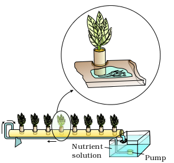
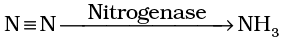
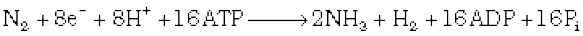

Chapter 12
Mineral Nutrition
Mineral Nutrition

12.1 Methods to Study the Mineral Requirements of Plants
12.2 Essential Mineral Elements
12.3 Mechanism of Absorption of Elements
12.4 Translocation of Solutes
12.5 Soil as Reservoir of Essential Elements
12.6 Metabolism of Nitrogen
The basic needs of all living organisms are essentially the same. They require macromolecules, such as carbohydrates, proteins and fats, and water and minerals for their growth and development.
This chapter focusses mainly on inorganic plant nutrition, wherein you will study the methods to identify elements essential to growth and development of plants and the criteria for establishing the essentiality. You will also study the role of the essential elements, their major deficiency symptoms and the mechanism of absorption of these essential elements. The chapter also introduces you briefly to the significance and the mechanism of biological nitrogen fixation.
12.1 Methods to Study the Mineral Requirements of Plants
In 1860, Julius von Sachs, a prominent German botanist, demonstrated, for the first time, that plants could be grown to maturity in a defined nutrient solution in complete absence of soil. This technique of growing plants in a nutrient solution is known as hydroponics. Since then, a number of improvised methods have been employed to try and determine the mineral nutrients essential for plants. The essence of all these methods involves the culture of plants in a soil-free, defined mineral solution. These methods require purified water and mineral nutrient salts. Can you explain why this is so essential?
After a series of experiments in which the roots of the plants were immersed in nutrient solutions and wherein an element was added / removed or given in varied concentration, a mineral solution suitable for the plant growth was obtained. By this method, essential elements were identified and their deficiency symptoms discovered. Hydroponics has been successfully employed as a technique for the commercial production of vegetables such as tomato, seedless cucumber and lettuce. It must be emphasised that the nutrient solutions must be adequately aerated to obtain the optimum growth. What would happen if solutions were poorly aerated? Diagrammatic views of the hydroponic technique is given in Figures 12.1 and 12.2.

Figure 12.1 Diagram of a typical set-up for nutrient solution culture

Figure 12.2 Hydroponic plant production. Plants are grown in a tube or trough placed on a slight incline. A pump circulates a nutrient solution from a reservoir to the elevated end of the tube. The solution flows down the tube and returns to the reservoir due to gravity. Inset shows a plant whose roots are continuously bathed in aerated nutrient solution. The arrows indicates the direction of the flow.
12.2 Essential Mineral Elements
Most of the minerals present in soil can enter plants through roots. In fact, more than sixty elements of the 105 discovered so far are found in different plants. Some plant species accumulate selenium, some others gold, while some plants growing near nuclear test sites take up radioactive strontium. There are techniques that are able to detect the minerals even at a very low concentration (10-8 g/mL). The question is, whether all the diverse mineral elements present in a plant, for example, gold and selenium as mentioned above, are really necessary for plants? How do we decide what is essential for plants and what is not?
12.2.1 Criteria for Essentiality
The criteria for essentiality of an element are given below:
(a) The element must be absolutely necessary for supporting normal growth and reproduction. In the absence of the element the plants do not complete their life cycle or set the seeds.
(b) The requirement of the element must be specific and not replaceable by another element. In other words, deficiency of any one element cannot be met by supplying some other element.
(c) The element must be directly involved in the metabolism of the plant.
Based upon the above criteria only a few elements have been found to be absolutely essential for plant growth and metabolism. These elements are further divided into two broad categories based on their quantitative requirements.
(i) Macronutrients, and
(ii) Micronutrients
Macronutrients are generally present in plant tissues in large amounts (in excess of 10 mmole Kg–1 of dry matter). The macronutrients include carbon, hydrogen, oxygen, nitrogen, phosphorous, sulphur, potassium, calcium and magnesium. Of these, carbon, hydrogen and oxygen are mainly obtained from CO2 and H2O, while the others are absorbed from the soil as mineral nutrition.
Micronutrients or trace elements, are needed in very small amounts (less than 10 mmole Kg–1 of dry matter). These include iron, manganese, copper, molybdenum, zinc, boron, chlorine and nickel.
In addition to the 17 essential elements named above, there are some beneficial elements such as sodium, silicon, cobalt and selenium. They are required by higher plants.
Essential elements can also be grouped into four broad categories on the basis of their diverse functions. These categories are:
(i) Essential elements as components of biomolecules and hence structural elements of cells (e.g., carbon, hydrogen, oxygen and nitrogen).
(ii) Essential elements that are components of energy-related chemical compounds in plants (e.g., magnesium in chlorophyll and phosphorous in ATP).
( iii) Essential elements that activate or inhibit enzymes, for example Mg2+ is an activator for both ribulose bisphosphate carboxylase-oxygenase and phosphoenol pyruvate carboxylase, both of which are critical enzymes in photosynthetic carbon fixation; Zn2+ is an activator of alcohol dehydrogenase and Mo of nitrogenase during nitrogen metabolism. Can you name a few more elements that fall in this category? For this, you will need to recollect some of the biochemical pathways you have studied earlier.
( iv) Some essential elements can alter the osmotic potential of a cell. Potassium plays an important role in the opening and closing of stomata. You may recall the role of minerals as solutes in determining the water potential of a cell.
12.2.2 Role of Macro- and Micro-nutrients
Essential elements perform several functions. They participate in various metabolic processes in the plant cells such as permeability of cell membrane, maintenance of osmotic concentration of cell sap, electron-transport systems, buffering action, enzymatic activity and act as major constituents of macromolecules and co-enzymes.
Various forms and functions of essential nutrient elements are given below.
Nitrogen : This is the essential nutrient element required by plants in the greatest amount. It is absorbed mainly as NO3– though some are also taken up as NO2– or NH4+. Nitrogen is required by all parts of a plant, particularly the meristematic tissues and the metabolically active cells. Nitrogen is one of the major constituents of proteins, nucleic acids, vitamins and hormones.
Phosphorus: Phosphorus is absorbed by the plants from soil in the form of phosphate ions (either as or ). Phosphorus is a constituent of cell membranes, certain proteins, all nucleic acids and nucleotides, and is required for all phosphorylation reactions.
Potassium: It is absorbed as potassium ion (K+). In plants, this is required in more abundant quantities in the meristematic tissues, buds, leaves and root tips. Potassium helps to maintain an anion-cation balance in cells and is involved in protein synthesis, opening and closing of stomata, activation of enzymes and in the maintenance of the turgidity of cells.
Calcium: Plant absorbs calcium from the soil in the form of calcium ions (Ca2+). Calcium is required by meristematic and differentiating tissues. During cell division it is used in the synthesis of cell wall, particularly as calcium pectate in the middle lamella. It is also needed during the formation of mitotic spindle. It accumulates in older leaves. It is involved in the normal functioning of the cell membranes. It activates certain enzymes and plays an important role in regulating metabolic activities.
Magnesium: It is absorbed by plants in the form of divalent Mg2+. It activates the enzymes of respiration, photosynthesis and are involved in the synthesis of DNA and RNA. Magnesium is a constituent of the ring structure of chlorophyll and helps to maintain the ribosome structure.
Sulphur: Plants obtain sulphur in the form of sulphate . Sulphur is present in two amino acids – cysteine and methionine and is the main constituent of several coenzymes, vitamins (thiamine, biotin, Coenzyme A) and ferredoxin.
Iron: Plants obtain iron in the form of ferric ions (Fe3+). It is required in larger amounts in comparison to other micronutrients. It is an important constituent of proteins involved in the transfer of electrons like ferredoxin and cytochromes. It is reversibly oxidised from Fe2+ to Fe3+ during electron transfer. It activates catalase enzyme, and is essential for the formation of chlorophyll.
Manganese: It is absorbed in the form of manganous ions (Mn2+). It activates many enzymes involved in photosynthesis, respiration and nitrogen metabolism. The best defined function of manganese is in the splitting of water to liberate oxygen during photosynthesis.
Zinc: Plants obtain zinc as Zn2+ ions. It activates various enzymes, especially carboxylases. It is also needed in the synthesis of auxin.
Copper: It is absorbed as cupric ions (Cu2+). It is essential for the overall metabolism in plants. Like iron, it is associated with certain enzymes involved in redox reactions and is reversibly oxidised from Cu+ to Cu2+.
Boron : It is absorbed as or . Boron is required for uptake and utilisation of Ca2+, membrane functioning, pollen germination, cell elongation, cell differentiation and carbohydrate translocation.
Molybdenum : Plants obtain it in the form of molybdate ions . It is a component of several enzymes, including nitrogenase and nitrate reductase both of which participate in nitrogen metabolism.
Chlorine : It is absorbed in the form of chloride anion (Cl–). Along with Na+ and K+, it helps in determining the solute concentration and the anion-cation balance in cells. It is essential for the water-splitting reaction in photosynthesis, a reaction that leads to oxygen evolution.
12.2.3 Deficiency Symptoms of Essential Elements
Whenever the supply of an essential element becomes limited, plant growth is retarded. The concentration of the essential element below which plant growth is retarded is termed as critical concentration. The element is said to be deficient when present below the critical concentration.
Since each element has one or more specific structural or functional role in plants, in the absence of any particular element, plants show certain morphological changes. These morphological changes are indicative of certain element deficiencies and are called deficiency symptoms. The deficiency symptoms vary from element to element and they disappear when the deficient mineral nutrient is provided to the plant. However, if deprivation continues, it may eventually lead to the death of the plant. The parts of the plants that show the deficiency symptoms also depend on the mobility of the element in the plant. For elements that are actively mobilised within the plants and exported to young developing tissues, the deficiency symptoms tend to appear first in the older tissues. For example, the deficiency symptoms of nitrogen, potassium and magnesium are visible first in the senescent leaves. In the older leaves, biomolecules containing these elements are broken down, making these elements available for mobilising to younger leaves.
The deficiency symptoms tend to appear first in the young tissues whenever the elements are relatively immobile and are not transported out of the mature organs, for example, element like calcium is a part of the structural component of the cell and hence is not easily released. This aspect of mineral nutrition of plants is of a great significance and importance to agriculture and horticulture.
The kind of deficiency symptoms shown in plants include chlorosis, necrosis, stunted plant growth, premature fall of leaves and buds, and inhibition of cell division. Chlorosis is the loss of chlorophyll leading to yellowing in leaves. This symptom is caused by the deficiency of elements N, K, Mg, S, Fe, Mn, Zn and Mo. Likewise, necrosis, or death of tissue, particularly leaf tissue, is due to the deficiency of Ca, Mg, Cu, K. Lack or low level of N, K, S, Mo causes an inhibition of cell division. Some elements like N, S, Mo delay flowering if their concentration in plants is low.
You can see from the above that the deficiency of any element can cause multiple symptoms and that the same symptoms may be caused by the deficiency of one of several different elements. Hence, to identify the deficient element, one has to study all the symptoms developed in all the various parts of the plant and compare them with the available standard tables. We must also be aware that different plants also respond differently to the deficiency of the same element.
12.2.4 Toxicity of Micronutrients
The requirement of micronutrients is always in low amounts while their moderate decrease causes the deficiency symptoms and a moderate increase causes toxicity. In other words, there is a narrow range of concentration at which the elements are optimum. Any mineral ion concentration in tissues that reduces the dry weight of tissues by about 10 per cent is considered toxic. Such critical concentrations vary widely among different micronutrients. The toxicity symptoms are difficult to identify. Toxicity levels for any element also vary for different plants. Many a times, excess of an element may inhibit the uptake of another element. For example, the prominent symptom of manganese toxicity is the appearance of brown spots surrounded by chlorotic veins. It is important to know that manganese competes with iron and magnesium for uptake and with magnesium for binding with enzymes. Manganese also inhibit calcium translocation in shoot apex. Therefore, excess of manganese may, in fact, induce deficiencies of iron, magnesium and calcium. Thus, what appears as symptoms of manganese toxicity may actually be the deficiency symptoms of iron, magnesium and calcium. Can this knowledge be of some importance to a farmer? a gardener? or even for you in your kitchen-garden?
12.3 Mechanism of Absorption of Elements
Much of the studies on mechanism of absorption of elements by plants has been carried out in isolated cells, tissues or organs. These studies revealed that the process of absorption can be demarcated into two main phases. In the first phase, an initial rapid uptake of ions into the ‘free space’ or ‘outer space’ of cells – the apoplast, is passive. In the second phase of uptake, the ions are taken in slowly into the ‘inner space’ – the symplast of the cells. The passive movement of ions into the apoplast usually occurs through ion-channels, the trans-membrane proteins that function as selective pores. On the other hand, the entry or exit of ions to and from the symplast requires the expenditure of metabolic energy, which is an active process. The movement of ions is usually called flux; the inward movement into the cells is influx and the outward movement, efflux. You have read the aspects of mineral nutrient uptake and translocation in plants in Chapter 11.
12.4 Translocation of Solutes
Mineral salts are translocated through xylem along with the ascending stream of water, which is pulled up through the plant by transpirational pull. Analysis of xylem sap shows the presence of mineral salts in it. Use of radioisotopes of mineral elements also substantiate the view that they are transported through the xylem. You have already discussed the movement of water in xylem in Chapter 11.
12.5 Soil as Reservoir of Essential Elements
Majority of the nutrients that are essential for the growth and development of plants become available to the roots due to weathering and breakdown of rocks. These processes enrich the soil with dissolved ions and inorganic salts. Since they are derived from the rock minerals, their role in plant nutrition is referred to as mineral nutrition. Soil consists of a wide variety of substances. Soil not only supplies minerals but also harbours nitrogen-fixing bacteria, other microbes, holds water, supplies air to the roots and acts as a matrix that stabilises the plant. Since deficiency of essential minerals affect the crop-yield, there is often a need for supplying them through fertilisers. Both macro-nutrients (N, P, K, S, etc.) and micro-nutrients (Cu, Zn, Fe, Mn, etc.) form components of fertilisers and are applied as per need.
12.6 Metabolism of Nitrogen
12.6.1 Nitrogen Cycle
Apart from carbon, hydrogen and oxygen, nitrogen is the most prevalent element in living organisms. Nitrogen is a constituent of amino acids, proteins, hormones, chlorophylls and many of the vitamins. Plants compete with microbes for the limited nitrogen that is available in soil. Thus, nitrogen is a limiting nutrient for both natural and agricultural eco-systems. Nitrogen exists as two nitrogen atoms joined by a very strong triple covalent bond (N ≡ N). The process of conversion of nitrogen (N2) to ammonia is termed as nitrogen-fixation. In nature, lightning and ultraviolet radiation provide enough energy to convert nitrogen to nitrogen oxides (NO, NO2, N2O). Industrial combustions, forest fires, automobile exhausts and power-generating stations are also sources of atmospheric nitrogen oxides.

Figure 12.3 The nitrogen cycle showing relationship between the three main nitrogen pools – atmospheric soil, and biomass
Decomposition of organic nitrogen of dead plants and animals into ammonia is called ammonification. Some of this ammonia volatilises and re-enters the atmosphere but most of it is converted into nitrate by soil bacteria in the following steps:
.... (i)
...... (ii)
Ammonia is first oxidised to nitrite by the bacteria Nitrosomonas and/or Nitrococcus. The nitrite is further oxidised to nitrate with the help of the bacterium Nitrobacter. These steps are called nitrification (Figure 12.3). These nitrifying bacteria are chemoautotrophs.
The nitrate thus formed is absorbed by plants and is transported to the leaves. In leaves, it is reduced to form ammonia that finally forms the amine group of amino acids. Nitrate present in the soil is also reduced to nitrogen by the process of denitrification. Denitrification is carried by bacteria Pseudomonas and Thiobacillus.
12.6.2 Biological Nitrogen Fixation
Very few living organisms can utilise the nitrogen in the form N2, available abundantly in the air. Only certain prokaryotic species are capable of fixing nitrogen. Reduction of nitrogen to ammonia by living organisms is called biological nitrogen fixation. The enzyme, nitrogenase which is capable of nitrogen reduction is present exclusively in prokaryotes. Such microbes are called N2- fixers.

The nitrogen-fixing microbes could be free-living or symbiotic. Examples of free-living nitrogen-fixing aerobic microbes are Azotobacter and Beijernickia while Rhodospirillum is anaerobic and Bacillus free-living. In addition, a number of cyanobacteria such as Anabaena and Nostoc are also free-living nitrogen-fixers.
Symbiotic biological nitrogen fixation
Several types of symbiotic biological nitrogen fixing associations are known. The most prominent among them is the legume-bacteria relationship. Species of rod-shaped Rhizobium has such relationship with the roots of several legumes such as alfalfa, sweet clover, sweet pea, lentils, garden pea, broad bean, clover beans, etc. The most common association on roots is as nodules. These nodules are small outgrowths on the roots. The microbe, Frankia, also produces nitrogen-fixing nodules on the roots of non-leguminous plants (e.g., Alnus). Both Rhizobium and Frankia are free-living in soil, but as symbionts, can fix atmospheric nitrogen.
Uproot any one plant of a common pulse, just before flowering. You will see near-spherical outgrowths on the roots. These are nodules. If you cut through them you will notice that the central portion is red or pink. What makes the nodules pink? This is due to the presence of leguminous haemoglobin or leg-haemoglobin.
Nodule Formation
Nodule formation involves a sequence of multiple interactions between Rhizobium and roots of the host plant. Principal stages in the nodule formation are summarised as follows:
Rhizobia multiply and colonise the surroundings of roots and get attached to epidermal and root hair cells. The root-hairs curl and the bacteria invade the root-hair. An infection thread is produced carrying the bacteria into the cortex of the root, where they initiate the nodule formation in the cortex of the root. Then the bacteria are released from the thread into the cells which leads to the differentiation of specialised nitrogen fixing cells. The nodule thus formed, establishes a direct vascular connection with the host for exchange of nutrients. These events are depicted in Figure 12.4.

(a)
Figure 12.4 Development of root nodules in soyabean : (a) Rhizobium bacteria contact a susceptible root hair, divide near it, (b) Successful infection of the root hair causes it to curl, (c) Infected thread carries the bacteria to the inner cortex. The bacteria get modified into rod-shaped bacteroids and cause inner cortical and pericycle cells to divide. Division and growth of cortical and pericycle cells lead to nodule formation, (d) A mature nodule is complete with vascular tissues continuous with those of the root
The nodule contains all the necessary biochemical components, such as the enzyme nitrogenase and leghaemoglobin. The enzyme nitrogenase is a Mo-Fe protein and catalyses the conversion of atmospheric nitrogen to ammonia, (Figure 12.5) the first stable product of nitrogen fixation. The reaction is as follows:


Figure 12.5 Steps of conversion of atmospheric nitrogen to ammonia by nitrogenase enzyme complex found in nitrogen-fixing bacteria
The enzyme nitrogenase is highly sensitive to the molecular oxygen; it requires anaerobic conditions. The nodules have adaptations that ensure that the enzyme is protected from oxygen. To protect these enzymes, the nodule contains an oxygen scavenger called leg-haemoglobin. It is interesting to note that these microbes live as aerobes under free-living conditions (where nitrogenase is not operational), but during nitrogen-fixing events, they become anaerobic (thus protecting the nitrogenase enzyme). You must have noticed in the above reaction that the ammonia synthesis by nitrogenease requires a very high input of energy (8 ATP for each NH3 produced). The energy required, thus, is obtained from the respiration of the host cells.
Fate of ammonia: At physiological pH, the ammonia is protonated to form (ammonium) ion. While most of the plants can assimilate nitrate as well as ammonium ions, the latter is quite toxic to plants and hence cannot accumulate in them. Let us now see how the  is used to synthesise amino acids in plants. There are two main ways in which this can take place:
is used to synthesise amino acids in plants. There are two main ways in which this can take place:
(i) Reductive amination : In these processes, ammonia reacts with
α-ketoglutaric acid and forms glutamic acid as indicated in the equation given below :
(ii) Transamination : It involves the transfer of amino group from one amino acid to the keto group of a keto acid. Glutamic acid is the main amino acid from which the transfer of NH2, the amino group takes place and other amino acids are formed through transamination. The enzyme transaminase catalyses all such reactions. For example,

The two most important amides – asparagine and glutamine – found in plants are a structural part of proteins. They are formed from two amino acids, namely aspartic acid and glutamic acid, respectively, by addition of another amino group to each. The hydroxyl part of the acid is replaced by another NH2– radicle. Since amides contain more nitrogen than the amino acids, they are transported to other parts of the plant via xylem vessels. In addition, along with the transpiration stream the nodules of some plants (e.g., soyabean) export the fixed nitrogen as ureides. These compounds also have a particularly high nitrogen to carbon ratio.
Summary
Plants obtain their inorganic nutrients from air, water and soil. Plants absorb a wide variety of mineral elements. Not all the mineral elements that they absorb are required by plants. Out of the more than 105 elements discovered so far, less than 21 are essential and beneficial for normal plant growth and development. The elements required in large quantities are called macronutrients while those required in less quantities or in trace are termed as micronutrients. These elements are either essential constituents of proteins, carbohydrates, fats, nucleic acid etc., and/or take part in various metabolic processes. Deficiency of each of these essential elements may lead to symptoms called deficiency symptoms. Chlorosis, necrosis, stunted growth, impaired cell division, etc., are some prominent deficiency symptoms. Plants absorb minerals through roots by either passive or active processes. They are carried to all parts of the organism through xylem along with water transport.
Nitrogen is very essential for the sustenance of life. Plants cannot use atmospheric nitrogen directly. But some of the plants in association with N2-fixing bacteria, especially roots of legumes, can fix this atmospheric nitrogen into biologically usable forms. Nitrogen fixation requires a strong reducing agent and energy in the form of ATP. N2 -fixation is accomplished with the help of nitrogen-fixing microbes, mainly Rhizobium. The enzyme nitrogenase which plays an important role in biological N2 fixation is very sensitive to oxygen. Most of the processes take place in anaerobic environment. The energy, ATP, required is provided by the respiration of the host cells. Ammonia produced following N2 fixation is incorporated into amino acids as the amino group.
Exercises
1. ‘All elements that are present in a plant need not be essential to its survival’. Comment.
2. Why is purification of water and nutrient salts so important in studies involving mineral nutrition using hydroponics?
3. Explain with examples: macronutrients, micronutrients, beneficial nutrients, toxic elements and essential elements.
4. Name at least five different deficiency symptoms in plants. Describe them and correlate them with the concerned mineral deficiency.
5. If a plant shows a symptom which could develop due to deficiency of more than one nutrient, how would you find out experimentally, the real deficient mineral element?
6. Why is that in certain plants deficiency symptoms appear first in younger parts of the plant while in others they do so in mature organs?
7. How are the minerals absorbed by the plants?
8. What are the conditions necessary for fixation of atmospheric nitrogen by Rhizobium. What is their role in N2 -fixation?
9. What are the steps involved in formation of a root nodule?
10. Which of the following statements are true? If false, correct them:
(a) Boron deficiency leads to stout axis.
(b) Every mineral element that is present in a cell is needed by the cell.
(c) Nitrogen as a nutrient element, is highly immobile in the plants.
(d) It is very easy to establish the essentiality of micronutrients because they are required only in trace quantities.